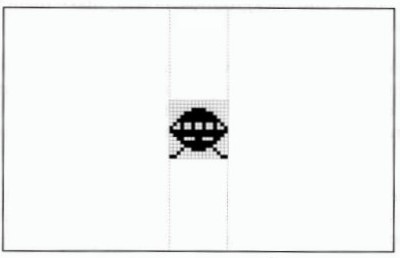
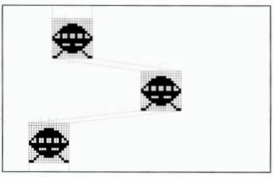

Hardware Sprites
Section 7 of this User Guide concentrates on the moving image. You will learn how to create,
edit and control moving objects and backgrounds, how to make them react to one another and
how to create professional animations.
AMOS Professional offers ,a choice of two moving-object systems, each with its own
characteristics and benefits. Objects stored as part of the current screen are featured in the next
Chapter. These blitter objects (Bobs) are easy to use, very fast and incredibly flexible.
Unfortunately, they consume a lot of memory and tend to slow down on 32 or 64-colour
displays.
By contrast, this Chapter deals with those graphical objects that exist independently from the
screen, known as Sprites. You will discover how AMOS Professional shatters the limitations
imposed by the Amiga on the number, size and colours of Sprites, and how to fully exploit their
potential.
Normal hardware Sprites
Sprites are directly generated by the Amiga's hardware. Because they are completely
independent from the screen, they can be moved at very high speeds over any type of screen,
including the 4096-colour screens achieved in HAM mode. This makes hardware Sprites ideal
for use in arcade games.
The Amiga offers up to eight hardware Sprites for instant display over any position on screen.
They are supposed to be exactly 16 units wide, up to 270 scan lines high and feature three
colours, with colour zero "transparent", allowing the background screen to show through. The
computer's hardware can also combine pairs of Sprites, increasing the range of colours to 15, but
halving the number of available Sprites to just four.
A choice between eight 3-colour and four 15-colour Sprites on screen is very limited, and quite
unacceptable to the AMOS Professional programmer, so the old Rule Book has been torn up and
rewritten for your benefit.
AMOS Professional computed Sprites
The AMOS Professional system takes the original hardware Sprites and combines them in a
revolutionary way. The new "computed Sprites" are extremely powerful, they are perfect for the
games programmer and they offer the following advantages:
- 56 computed Sprites are allowed on screen at once.
- Each Sprite can feature up to 15 colours.
- Each Sprite may be up to 64 units wide.
- Each Sprite may be up to 270 lines high.
In order to take full advantage of computed Sprites in practice, you will need some working
knowledge of the theory behind them.
AMOS Professional computed Sprites rely on the fact that each original Amiga hardware Sprite
is up to 270 units high. So if your required image is smaller than this, most of the Sprite area is
effectively wasted. Look at the diagram below, which shows a single hardware Sprite
positioned at the centre of a typical screen.
A 16 x 16 hardware sprite

If this hardware Sprite is split into segments, and each segment is assigned to a separate image,
the same memory area of this single Sprite can be used to display up to 16 simultaneous images.
Fortunately, the Amiga's hardware allows each of these segments to be repositioned anywhere
on the current line, as illustrated by the next diagram.
Computed sprites

Because there are up to eight 3-colour or four 15-colour Sprites available for AMOS Professional
to commandeer and use, you are given access to dozens of objects on the screen at the same
time. However, there is still the size restriction to be overcome.
By displaying two or more 16-pixel Sprites side by side, larger objects can be created, up to a
maximum width of 64 pixels for 15-colour and 128 pixels for 3-colour Sprites. Even if these width
limits are exceeded, your programs will still run, although it is highly likely that your SPRITE
command will be completely ignored!
When you use a mixture of 3-colour and 15-colour Sprites on the same screen, it is much safer to
assume that the lower width limit totalling 64 pixels applies. Alternatively, the maximum total
line widths of Sprites may be calculated as follows:
total width = (Width of all 15-colour Sprites)*2 + (Width of all 3-colour Sprites)
By assuming that the total width must always be less than 128 pixels, you will not cause any
disasters.
Hardware Sprites versus computed Sprites
The greatest problem when using computed Sprites is that you never know precisely which
hardware Sprite is going to be assigned to any particular object! Each computed Sprite can be
instructed from a mixture of hardware Sprites, and the mixture changes every time the object
is moved on the screen.
This can lead to major problems, especially if you need to animate objects that must stay visible
in a wide range of Sprite combinations. In these circumstances it is useful to assign a specific
group of hardware Sprites to a single object, and the SPRITE command allows you to allocate
such Sprites directly by using an identification number between 0 and 7. For Example, the next
line allocates hardware Sprite 2 to image number 1, and positions it at coordinates 200,100:
Sprite 2,200,100,1
After a Sprite has been grabbed in this way, it will be completely removed from the computed
Sprite system, so there will be an inevitable reduction in the number of computed Sprites that
can be displayed on screen.
If the required image is wider than 16 pixels, AMOS Professional will automatically assign
additional hardware Sprites to this object. These Sprites will be allocated in consecutive order,
starting from your original Sprite number.
Look again at the last example line above. Suppose that image number 1 contains a 30 by 20
picture in three colours. The SPRITE command will automatically grab Sprite number 3 as well
as number 2, so any future attempt to display Sprite number 3 would fail, because it is already in
use. You would then be restricted to assigning hardware Sprites 0,1,4,5,6 and 7 only, and greatly
reducing the number of possible computed Sprites.
It is also important to understand that each 15-colour Sprite is actually displayed by using a pair
of 3-colour Sprites. The Amiga's hardware allows you to combine matched pairs of Sprites in the
following groups only:
0 and 1, 2 and 3, 4 and 5, 6 and 7.
So it is vital to assign 15-colour images to even Sprite numbers, or AMOS Professional will be
forced to display your object using the next pair of Sprite numbers, which is a complete waste of
a Sprite.
There is a trouble-shooting section at the end of this Chapter, which should answer the most
common problems experienced with Sprites. Meanwhile, please load this ready-made program,
which demonstrates the advantages of using computed Sprites over Bobs:
Load "AMOSPro Tutorials:Tutorials/Sprites_v_Bobs.AMOS"
The Sprite command
instruction: display a Sprite on the screen
Sprite Sprite number
Sprite Sprite number,hx,hy,image number
The SPRITE command assigns an image to a Sprite, and displays it at the selected hardware
coordinates.
The Sprite number can range from 0 to 63. Normally, Sprite number zero is not available because
it is already allocated to the mouse pointer. To ensure that you have the maximum number of
Sprites at your disposal, remove the mouse pointer from the screen with HIDE ON. Sprite
identification numbers from 0 to 7 refer to the eight hardware Sprites whose limitations have
already been explained. You will probably want to make use of the AMOS Professional
computed Sprites in your programs instead, and these are assigned the numbers from 8 to 63.
The hardware coordinates hx and hy set the position at which the Sprite will be displayed. Since
Sprites are totally independent from the current screen, normal screen coordinates cannot be
used for this purpose. Instead, all Sprites are positioned by special hardware coordinates as used
by the mouse pointer and the SCREEN DISPLAY command. Hardware coordinates can be
converted from normal screen coordinates by the X HARD and Y HARD functions, which are
explained later.
The position of the Sprite is measured from a single spot related to that Sprite, known as the
"hot spot". This is usually taken to be the top left-hand corner of the Sprite, but it can be placed
anywhere you like using the HOT SPOT command. Hot spots are explained in detail near the
end of this Chapter.
When the Sprite has been allocated an identification number and given its display coordinates,
you must select an image for the Sprite to display. Images are created using the Object Editor
(there is a guided tour of this process in Chapter 13.2) and deposited in the Object Bank, which
is normally memory bank 1. Each image in this bank is assigned its own number, starting from
one. To select an image for a Sprite to display, simply give the appropriate image number. Sprite
images may be installed into your programs using the LOAD command, like this:
Load "Sprites.Abk"
Once images have been installed in this way they will be saved along with your AMOS
Professional programs automatically.
The image number and coordinate parameters can be omitted after a SPRITE command, but the
appropriate commas must be included.
For example:
Load "AMOSPro Tutorial:Objects/Sprites.Abk"
Flash Off : Get Sprite Palette
Curs Off : Cls 0
Sprite 8,200,100,1
Wait Key
Sprite 8,,150,1
Wait Key
Sprite 8,250,,1
Wait Key
Sprite 8,,,2
DEL SPRITE
instruction: delete an image from the Object Bank
Del Sprite number
Del Sprite first To last
The DEL SPRITE command permanently deletes one or more Sprite images from the Object
Bank. To erase a single image, simply give the image number to be deleted, like this:
Del Sprite 2
Whenever an image is deleted, all the subsequent images in the Bank are moved up one place in
the numerical order. For instance, if the Bank originally contained four images, the above
example would remove image number 2 from memory, leaving a gap between images 1 and 3.
This gap would be filled immediately, as the old image numbers 3 and 4 were shunted up one
place, to become the new image numbers 2 and 3.
If more than one image is to be removed from the Bank, you can set the range from the first
image to the last after a DEL SPRITE command. The following example would delete Sprite
images 4,5,6 and 7:
Del Sprite 4 To 7
After the last image has been deleted from the Object Bank, the entire Bank is erased
automatically.
INS SPRITE
instruction: insert a blank Sprite image into the Object bank
Ins Sprite number
Ins Sprite first To last
INS SPRITE inserts a blank image at the numbered position in the current Object Bank. All of
the images after this numbered position will then be moved down one place in the numerical
order. The second version of this command allows you to create several spaces in a single
operation, by giving the range of new gaps between the first and last image numbers that you
specify.
Any of these new image spaces are completely empty, and so cannot be allocated to a Sprite Or
displayed directly on screen while they are still blank. An actual image must first be grabbed
into the Object Bank, using a GET SPRITE or GET BOB command. If this is not done, the
appropriate error message will be given as soon as you try to access the empty image.
Both DEL SPRITE and INS SPRITE are provided to be used with the GET BOB and GET SPRITE
commands. They allow you to modify and adjust your Sprite images from inside AMOS
Professional programs, with complete freedom.
The Sprite Palette
Although Sprites are independent of the screen, the colours that they use are definitely not! So
before displaying a Sprite image it is essential to grab the correct colours. All colours are taken
from the standard 32 colour registers provided by the Amiga's hardware, but the precise
registers to be used depend on the type of Sprite.
15-colour Sprites. These use colour registers 16 to 31, which may not be needed by 16-colour
screens, but are vital when 32-colour and 64-colour modes are in use, ensuring that these Sprite
images are.totally consistent with the screen background.
If you employ background screen graphics created with a commercial drawing package such as
Deluxe Paint, you must ensure that your Sprite images use exactly the same colour values as the
screen image. This presents no problem to AMOS Professional, and is achieved as follows.
Load the colour palette from an IFF file of the screen image directly into the AMOS Professional
Object Editor, using the [Grabber] option to select any part of the picture. Please see Chapter
13.2 for full details. The correct colour values are copied directly to the Sprite Bank, and will be
saved along with your images automatically.
It is also possible to display 32-colour image files on a 16-colour screen. Because the Bob and
Sprite palettes are completely separate, colours 0 to 15 can be reserved for Bobs and colours 16 to
31 for Sprites.
3-colour Sprites. Things are a little more complex when using these, because each pair of Sprites
uses its own set of colour registers, as follows:
Hardware Sprites Transparent Colour registers
0 and 1 16 17,18,19
2 and 3 20 21,22,23
4 and 5 24 25,26,27
6 and 7 28 29,30,31
Note that for each pair of Sprites there is one register that is assumed to be transparent, and
three colour registers.
As has been explained, the hardware sprites used to create computed sprites will vary during
the course of your program, so it is vital that the three colours used by each pair of hardware
sprites are exactly the same. A procedure is provided to accomplish this, and it may be found
along with a host of other useful procedures, in Appendix C.
GET SPRITE PALETTE
instruction: grab sprite colours into screen
Get Sprite Palette
Get Sprite Palette mask
This command copies the colour values used by your Sprite and Bob images and loads them into
the current screen. It is an intelligent instruction, so if 16-colour screens are in use, values are
automatically copied into colour registers 16 to 31. This means that you can use the same images
for either Bobs or Sprites with no risk of colour clashes! Here is an example:
Load "AMOSPro Tutorial:Objects/Sprites.Abk"
Curs Off : Flash Off : Cls 0
Get Sprite Palette
Rem Set computed Sprite at hardware coords 128,50 using image 1
Sprite 8,128,50,1
Wait Key
The optional mask parameter allows the colour selection to be limited. Each colour is
represented by a single digit in a 32-digit bit mask. If the appropriate digit is set to 1, the colour
is copied from the Object Bank. Any colours to be omitted (masked) should have their digit set
to 0. The following example copies colours 0 to 3 from the Object Bank into the screen:
Get Sprite Palette %0000000000001111
Because the mask is entered as a normal number, either hexadecimal or decimal modes can also
be used:
Get Sprite Palette $FFFF0000
Please note that the GET BOB PALETTE and GET OBJECT PALETTE instructions perform an
identical task to the GET SPRITE PALETTE command.
GET SPRITE
instruction: grab screen image into the Object Bank
Get Sprite image number,x1,y1 To x2,y2
Get Sprite screen number,image number,x1,y1 To x2,y2
Use this command to grab images directly from the screen and transform them into Sprites.
Simply define the new image number, then give the coordinates, from top left-hand to bottom
right-hand corner, of the rectangular area to be loaded into the Sprite Bank. The image will be
grabbed from the current screen unless an optional screen number is specified.
Provided that the given coordinates lie inside of existing screen borders, there are no limitations
to the area that can be grabbed in this way.
If there is no existing Sprite with the selected number, it will be created automatically. Similarly,
the Sprite Bank will be reserved by AMOS Professional, if it is not already defined.
It should be noted that the GET BOB instruction is identical to GET SPRITE, making them
interchangeable.
SET SPRITE BUFFER
instruction: set maximum height of Sprites
Set Sprite Buffer number
This command allocates extra memory for hardware and computed Sprites to work within.
Although each hardware Sprite can be up to 270 lines in height, AMOS Professional reserves
sufficient memory for 128 lines, as the default allocation.
If you are using computed Sprites, it is more practical to extend the SET SPRITE BUFFER
number to a larger value. This is economical on memory, since each line only consumes 96 bytes.
Thus a maximum height value of 256 would require about 12k of extra memory.
Be warned that this command erases all current Sprite assignments, as well as re-setting the
mouse pointer, so it must be used at the beginning of your programs! For example, the
following line would be placed at the start of your listing:
Set Sprite Buffer 256
Sprite Commands
SPRITE UPDATE
instruction: control Sprite movements
Sprite Update
Sprite Update Off
Sprite Update On
The SPRITE UPDATE family of commands provide total control of Sprite movements. Normally,
when a Sprite is moved its position is updated automatically during the next vertical blank
period. Please see WAIT VBL if this needs explaining. However, when many Sprites are moved
with the SPRITE command, updates will happen before all of the Sprites have been successfully
repositioned, which can result in jerky patterns of movement. In these circumstances, the
automatic updating system can be turned off with a SPRITE UPDATE OFF command.
When the Sprites have been moved successfully, a call to SPRITE UPDATE will reposition any
Sprites that have been moved since the last update. Alternatively, SPRITE UPDATE ON returns
to the default status of automatic updating.
SPRITE OFF
instruction: remove Sprites from screen
Sprite Off
Sprite Off number
The SPRITE OFF command removes all sprites from your display, and all current Sprite
movements are aborted. To re-start them, the movement pattern must be initialised again.
(Please see the AMAL facilities explained in Chapter 7.6). If an optional Sprite number is given,
only that Sprite will be de-activated and removed from the screen.
Please note that Sprites are de-activated every time the AMOS Professional editor is called up.
Sprites are automatically returned to their original positions the next time Direct Mode is
entered.
X SPRITE
function: return x-coordinate of a Sprite
x=X Sprite(number)
This function returns the current x-coordinate of the Sprite whose number is given in brackets.
The Sprite number can range from 0 to 63, and positions are given in hardware coordinates. Use
X SPRITE to check if a Sprite has passed off the edge of the screen.
Y SPRITE
function: return y-coordinate of a Sprite
y=Y Sprite(number)
This gives the vertical position of the specified Sprite, measured in hardware coordinates.
I SPRITE
function: return current image number of a Sprite
image=I Sprite(number)
This function returns the current image number being used by the specified Sprite. If the Sprite
is not displayed, a value of zero will be returned.
Conversion Functions
X SCREEN
function: convert hardware x-coordinate to screen x-coordinate
x=X Screen(xcoordinate)
x=X Screen(screen number,xcoordinate)
Y SCREEN
function: convert hardware y-coordinate to screen y-coordinate
y=Y Screen(ycoordinate)
y=Y Screen(screen number,ycoordinate)
These functions transform a hardware coordinate into a screen coordinate, relative to the
current screen. If the hardware coordinates lie outside of the screen, both functions will return
relative offsets from the screen boundaries. An optional screen number may be included, in
which case the coordinates will be returned relative to that screen.
X HARD
function: convert screen x-coordinate into hardware x-coordinate
x=X Hard(xcoordinate)
x=X Hard(screen number,xcoordinate)
Y HARD
function: convert screen y-coordinate into hardware y-coordinate
y=Y Hard(ycoordinate)
y=Y Hard(screen number,ycoordinate)
These functions convert screen coordinates into hardware coordinates, relative to the current
screen. As with X SCREEN and Y SCREEN, an optional screen number can be given, and
coordinates will be returned relative to that screen.
With all four of the above functions, sensible values can only be returned when the relevant
screen has been fully initialised. Both the SCREEN OPEN and SCREEN DISPLAY commands
only come into effect from the next vertical blank, and the following examples demonstrate that
the correct coordinate values (in this case 128,50) are only returned after a WAIT VBL command.
Screen Open 0,320,255,16,Lowres
Print X Hard(0,0); Y Hard(0,0)
Now try the correct version:
Screen Open 0,320,255,16,Lowres
Wait Vbl
Print X Hard(0,0); Y Hard(0,0)
The default screen is initially located at hardware coordinates (128,50), and if you find the whole
business of hardware coordinates and screen coordinates tiresome, you can bypass the entire
conversion system.
By setting the HOT SPOT of your Sprite images to (-128,-50), the reference point for all position
calculations is removed to the far corner of the display. Once an image has been prepared in this
way, it can be assigned to a Sprite and moved around using normal screen coordinates. For
example:
Hot Spot 1,-128,-50: Rem Set up hot spot
Sprite 8,160,100,1 : Rem Sprite 8 to screen coords 160,100
The Hot Spot
Whenever an image is drawn on screen using the SPRITE or BOB command, it is positioned
using an invisible reference point known as the "hot spot". This reference point is then used for
all coordinate calculations.
HOT SPOT
instruction: set reference point for all coordinate calculations
Hot Spot image number,x,y
Hot Spot image number,pre-set value
The HOT SPOT command sets the hot spot of an image stored in the current Object Bank. The
hot spot x,y-offset is measured from the top left-hand corner of the image, and is added to those
coordinates before use, as illustrated in the following diagram:

It is perfectly legal to position the hot spot outside of the current screen display. This can be
used for automatic conversion of all screen coordinates, as explained above, or to set up a games
sequence with Sprites appearing from off-screen.
There is another version of this instruction, allowing automatic positioning of the hot spot to
any one of nine pre-set positions. These positions are shown in the following diagram, with the
central point of the Object image represented by the value $11. The value for a pre-set hot spot
at the top right-hand corner of the image is $20, for the bottom left-hand corner $02, and so on.

The Sprite Doctor
The final part of this Chapter contains some instant diagnoses and remedies for common Sprite
illnesses!
Problem: I can't display hardware Sprite zero. It does not want to appear.
Remedy: Hardware Sprite zero is already allocated to the mouse pointer.
Use HIDE ON to remove the mouse pointer from the screen, and try again.
Problem: Whenever the distance between my computed Sprites exceeds about half the screen,
the lower ones vanish.
Remedy: Although hardware Sprites can be a maximum of 270 units high, the default setting is
128. Increase the height using SET SPRITE BUFFER by placing the following line at the start of
your program:
Set Sprite Buffer 256
Problem: How do I display 15-colour Sprites on a 32 or 64-colour screen?
Remedy: Create your images in 32-colour mode, and draw your Sprites using colour numbers 16
to 31. When these images are loaded into your program, the Sprites will be displayed correctly.
Problem: When I try to move Sprites with AMAL, some of the objects disappear at random.
Remedy: The total width of your Sprites exceeds the maximum of 64. You should read the User
Guide more thoroughly! Replace some of your larger Sprites with Bobs to free up as many
component hardware Sprites as possible. Alternatively, reduce the total number of Sprites on
the screen and try using a small number of fast objects instead of a large number of slower ones.
Problem: When I move the screen with SCREEN OFFSET and SCREEN DISPLAY, my Sprites go
most peculiar.
Remedy: There is a hardware confrontation between the Sprite system and the Display system,
probably because AMOS Professional is stretching your Amiga to its absolute limits! Reduce the
load on the system as follows. At the start of your program, just after the SET SPRITE BUFFER
command, define hardware Sprites 6 and 7 using the SPRITE command. Now assign these
Sprites to negative coordinates, and position them off the screen. It is now impossible to use
them for computed Sprites, and if they are never displayed on the screen during your scrolling
operations, your problem is solved.